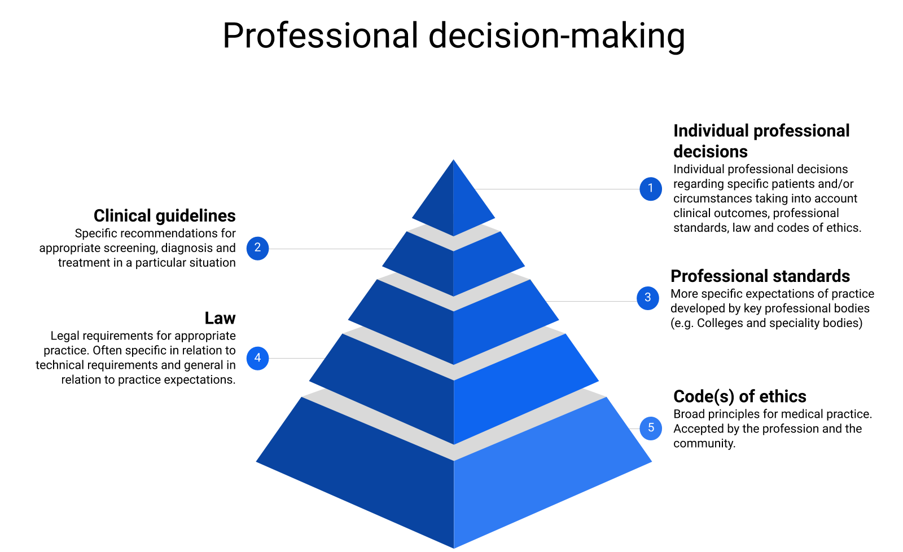

Adam La Caze
School of Pharmacy
The University of Queensland

Samara is 35 and looks after 3 children. She suffers regular migraines, depression and anxiety. Samara presents to clinic asking for a script for her anxiety and pain tablets.
She is currently taking nitrazepam, diazepam, tramadol, amitriptyline and some antibiotics for a recent upper respiratory infection.
Looking at your records she has been coming more regularly than you would expect for her pain and anxiety tablets. One of your colleagues recently noted a concern that she was “relying on these medicines too much”.
Being a health professional means practising in accordance with the law.
Practising outside of the law puts the public at risk.
If that is not a good enough reason; practising outside the law puts you at risk.
Risk of civil litigation
Risk of professional censure: unprofessional conduct/professional misconduct (perhaps leading to removal of registration).
Risk of prosecution in the courts for breaches of the HDPR
A lot of legislation is relevant to medical practice. We are focusing on those related to medicines.
The nice thing about legislation is that it is written down.
The Medicines and Poisons Act 2019 replaces the Health Act 1937 and provides a framework for replacing the Health (Drugs and Poisons) Regulation 1996.
The new regulations will be the Medicines and Poisons Regulation (Medicines Regulation). As at March 2021, this regulation is yet to be in force and the time frame for its implementation is unclear.
While there will be changes, there will still be much that is similar to the HDPR.
| Instrument | Acronym | Function |
|---|---|---|
| Standard for Uniform Scheduling for Medicines and Poison | SUSMP | Provides scheduling for all medicines available in Australia |
| Health (Drugs and Poisons) Regulation 1996 | HDPR | Provides regulations for prescribing, dispensing and supply of medicines in Queensland |
| Pharmaceutical Benefits Scheme | PBS | The federal scheme that subsidizes medication costs |
| SUSMP | HDPR | Alternatives | Examples |
|---|---|---|---|
| S2,S3 | Poisons | Over-the-counter drugs | Paracetamol |
| S4 | Restricted drug | Prescription drug | Antibiotics |
| S8 | Controlled drug | Dangerous drug | Opioids |
Endorsements outline what activities each health professional is authorised to perform
To the extent necessary to practice medicine, doctors are authorised to obtain, possess, prescribe, dispense, administer and supply controlled drugs (s58) and restricted drugs (s161)
Other health professionals: nurses, pharmacists, podiatrists, dentists, …, are authorised to perform subsets of these activities.
Examples include dexamphetamine (s78), medical cannabis (s78A), isotretinoin (s186), …
Some of the additional items needed on a controlled drug prescription: single drug, patient’s date of birth, quantity in words in figures
There are similar restrictions in the Medicines and Poisons Act 2019—see s40. The wording is slightly different: “high-risk medicine” cf controlled drug
Additional guidance is provided in the Code of Conduct (9.2.2)
Samara is 35 and looks after 3 children. She suffers regular migraines, depression and anxiety. Samara presents to the practice asking for a script for her anxiety and pain tablets.
She is currently taking nitrazepam, diazepam, tramadol, amitriptyline and some antibiotics for a recent upper respiratory infection.
Looking at your records she has been coming more regularly than you would expect for her pain and anxiety tablets. One of your colleagues recently noted a concern that she was “relying on these medicines too much”.
| Model | Considerations |
|---|---|
| Problem and possible consequences | Medication use disorder; uncertainty regarding diagnosis; serious possible consequences |
| Relevant law and professional standards | Can provide legal prescription; professional standards in relation to medication use disorder are evolving |
| Options | Prescribe; extended consultation; refer |
| Plan | What do you do? |
This example is based on one of the cases discussed in Forbes (2014).
The patient in this case died from drug misadventure with toxic levels of the anxiety and pain medications.
She was identified as a patient at risk of drug misadventure by multiple prescribers and her pharmacist, but there was limited discussion between them and both continued to prescribe and dispense.
| Drug | Class | Schedule | Law/Guidance |
|---|---|---|---|
| Tramadol | Opioid | S4 | HDPR, Medicines and Poisons Act 2019, Code of conduct |
| Ketamine | NMDA antagonist | S8 | HDPR, Medicines and Poisons Act 2019, Code of conduct |
| Hydroxychloroquine | Antiprotozoal, DMARD | S4 | HDPR, Code of conduct |
Coombes, I., Markwell, A., Kubler, P., Redmond, A. M., McGurk, G., & Roberts, J. A. (2020). Principles of ethical prescribing for self and others: Hydroxychloroquine in the covid-19 pandemic. Australian Prescriber, 43(3), 76–77. https://doi.org/10.18773/austprescr.2020.030
Forbes, C. (2014). State Coroner’s Court of New South Wales: Inquest into the deaths of Christopher SALIB, Nathan ATTARD and Shamsad AKHTAR (pp. 1–106). State Coroner’s Court of New South Wales. http://www.coroners.justice.nsw.gov.au/Documents/doctor shopping amended finding.pdf
Gould, S., & Norris, S. L. (2021). Contested effects and chaotic policies: The 2020 story of (hydroxy) chloroquine for treating covid‐19. Cochrane Database of Systematic Reviews, 1. https://doi.org/10.1002/14651858.ED000151
Winch, S., Milligan, E., & Rolley, A. (2014). Clinical ethics for emergency healthcare. In Emergency and trauma care: For nurses and paramedics (pp. 1–16).